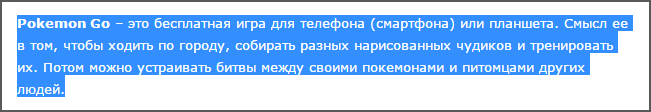
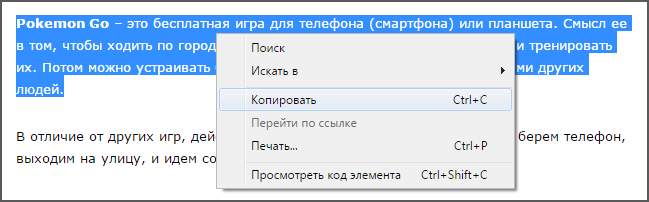
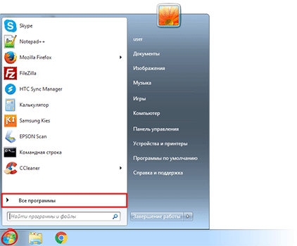
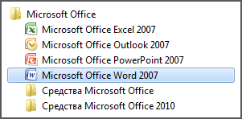
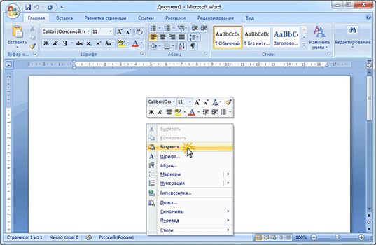
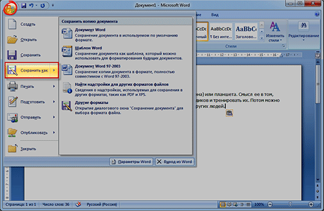
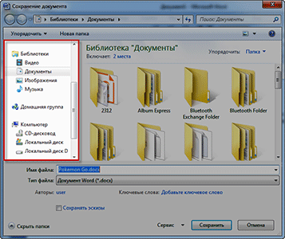
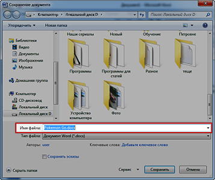
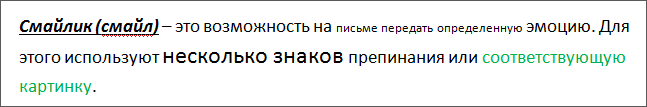
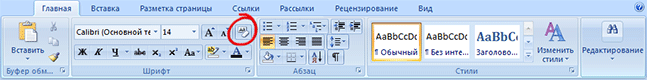

Как сохранить текст из интернета на компьютер
Раньше текст сохраняли на компьютер, чтобы почитать его, выйдя из интернета (так было дешевле). Сейчас это не очень актуально, ведь каждую страницу можно просматривать сколько угодно по времени – это не отражается на стоимости интернета. А можно ее добавить в закладки и открыть позже, когда это будет удобно.
Поэтому сейчас информацию из сети записывают, чтобы:
- Распечатать на принтере
- Добавить в реферат
- Записать на флешку
Принцип сохранения следующий: выделили текст – скопировали – открыли программу (Word или подобную) – вставили – сохранили.
В итоге на компьютере получается отдельный файл, который можно будет открыть в любое удобное время (в том числе, когда нет доступа к интернету), распечатать его, скинуть на флешку.
А теперь подробно
1. Выделяем текст или его часть.
Подводим курсор (палочку) в самое начало текста, который нужно скопировать. Затем нажимаем на левую кнопку мышки и, не отпуская ее, как будто бы обводим строки. Когда они закрасятся каким-нибудь цветом (скорее всего, голубым), отпускаем кнопку мышки. Выделение при этом должно остаться.
2. Копируем то, что выделили.
Наводим курсор в любое место закрашенной части и нажимаем правую кнопку мышки. Появится список. При этом выделение должно остаться. В списке наводим на пункт «Копировать» и щелкаем по нему левой кнопкой мышки.
3. Открываем программу для вставки текста.
Это может быть Microsoft Word, WordPad, Блокнот или какая-то другая. Для ее открытия щелкаем по кнопке «Пуск» в нижнем левом углу экрана и из списка выбираем «Все программы».
Далее ищем пункт Microsoft Office и там выбираем Microsoft Office Word.
Если ничего подобного вы у себя не находите, откройте пункт «Стандартные» и выберите программу «WordPad» или «Блокнот».
4. Вставляем информацию в программу.
Когда программа откроется, нажимаем внутри нее, то есть по белой части, правой кнопкой мышки. Появится список, из которого выбираем пункт «Вставить».
Если все сделано правильно, то текст из интернета вставится в программу.
Картинки и фотографии обычно добавляются вместе с ним.
5. Сохраняем на компьютер.
Хоть информация и вставилась, но на компьютер она еще не записана. Чтобы это сделать, нужно нажать на кнопку «Файл» в приложении и выбрать «Сохранить» или «Сохранить как…».
Появится окошко, в котором нужно выбрать место в компьютере, куда следует записать данные.
Например, я хочу сохранить документ в Локальный диск D. Значит, выбираю диск D в этом окошке.
А если я хочу записать его сразу на флешку, то выбираю именно ее в этом окошке.
Кстати, прямо здесь, внутри, можно создать отдельную папку для текста.
После того как в окошке выбрано нужное место, обратите внимание на поле «Имя файла». В нем указано то название, которое система предлагает дать документу. Если оно не подходит, можно напечатать другое, более подходящее.
Когда место для файла выбрано и имя назначено, нажимаем кнопку «Сохранить».
Теперь полностью закрываем приложение и открываем то место на ПК, которое выбирали в окошке сохранения.
В моем случае это был Локальный диск D. Значит, открываю Пуск – Компьютер и захожу в диск D.
Там должен быть файл, открыв который, появится тот самый текст из интернета.
Как очистить текст от мусора
Зачастую скопированный текст добавляется в программу вместе с оформлением, какое было у него в интернете. Бывает, оно выглядит не очень симпатично.
Поправить это легко: нужно просто выделить текст (так же, как мы это делали при копировании) и нажать на вот такую кнопку вверху программы Word: - она находится в закладке «Главная».
Сразу после этого у выделенных данных уберутся все эффекты.